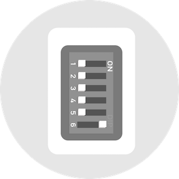
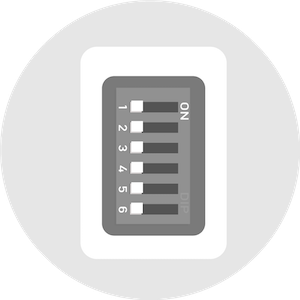

If you do not want to set macro key, you can skip this step
You can set up to 12 macro keys
.TEX filename must be English capital letters.
You can choose profile 1 (or 2/3) by switching DIP port 1 (or 2/3) on.

Switch DIP port 6 "ON" on the back of the keyboard. (as shown in figure).
Reconnect keyboard to the computer.
Download .TEX file from web.
Copy the .TEX file to the disc of keyboard.

Disconnect keyboard. Switch DIP port 6 "OFF" and port 1 (or 2/3) "ON" as you want.
And reconnect keyboard to computer. Enjoy the remapping!